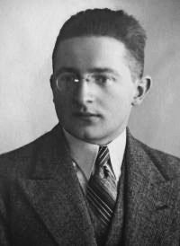

Şu ana kadar enigmanın nasıl çalıştığını açıkladık. Şimdi de enigmanın şifresini kıran çözümlere bakalım. Bu yazıda Polonyalı matematikçiler Marian Rejewski, Henryk Zygalski ve Jerzy Rozycki'nin döngülerin matematiksel yapısına dayanan çözümünü anlatacağım. Ardından Turing'in mantıksal çelişki bulmaya dayalı çözümüne geçeceğiz.
Polonyalıların Çözümü
Enigma makinesinin gün boyunca sabit olan günlük anahtar kullanılması, şifreli metinlerde tekrarlayan istatistiksel desenlerin oluşmasına ve güvenlik zafiyetine yol açmaktadır. Bu nedenle Almanlar, her iletişim için rastgele belirlenen ve sadece o mesaja özgü olan bir mesaj anahtarı kullanmışlardır. Buna göre kullanıcı tarafından seçilen mesaj anahtarı, makinenin günlük anahtarı ile iki kez şifrelenip metnin başlangıcında gönderilirken; mesajın asıl metni, o mesaj için özel olarak seçilen bu yeni anahtarla şifrelenerek iletilir. Polonyalı matematikçiler Marian Rejewski, Henryk Zygalski ve Jerzy Rozycki bu iki kez şifrelemeyi kullanarak enigmayı çözen bir yöntem geliştirmişlerdir. Bu yöntem üç harflik mesaj anahtarlarının yaklaşık 50-60 tanesini kullanarak doğrudan permütasyonu bulmaya dayanan bir methoddur.
Problemi matematiksel olarak inceleyelim. Şifrelenmiş metindeki 6 harflik başlangıç dizilerinden bir tanesi x_1x_2x_3x_4x_5x_6, mesaj anahtarı y_1y_2y_3 ve günlük anahtarla oluşmuş permütasyonlar da \mathcal{E}_1, \mathcal{E}_2, \mathcal{E}_3, \mathcal{E}_4, \mathcal{E}_5, \mathcal{E}_6 olsun. Buradaki \mathcal{E}_i'lerin sabit noktası olmayan birer involüsyon olduğunu hatırlayınız. Bu durumda
olur. Polonyalıların çözümü üç adımdan oluşur:
- Toplanan mesaj anahtarları kullanılarak \mathcal{E}_1\mathcal{E}_4, \mathcal{E}_2\mathcal{E}_5 ve \mathcal{E}_3\mathcal{E}_6 hesaplanır.
- \mathcal{E}_1\mathcal{E}_4, \mathcal{E}_2\mathcal{E}_5 ve \mathcal{E}_3\mathcal{E}_6'nın iki tane sabit noktası olmayan involüsyonun çarpımı şeklindeki olası tüm ayrışımlarını bul.
- Olası ayrışımlar arasından hangilerinin doğru olduğu belirlenir ve böylece \mathcal{E}_1, \mathcal{E}_2, \mathcal{E}_3 öğrenilir. Böylece o günün günlük anahtarı öğrenilmiş olur. Bu günlük anahtar kullanılarak o mesajın anahtarı da öğrenilmiş olur ve mesaj çözülür.
Şimdi bu adımların nasıl uygulandığını görmeden önce bu adımlarda kullanılan teoremleri öğrenmek için matematiksel bir ara verelim.
Matematiksel Bir Ara
x\rho_1 = y_1 eşitliğini sağdan \rho_1^{-1} ile çarpalım. Bu durumda x = y_1\rho_1^{-1} olarak bulunur. \rho_1, bir involüsyon olduğu için \rho_1 = \rho_1^{-1} eşitliği geçerlidir. Bu özellik kullanılarak y_1\rho_1^{-1} = y_1\rho_1 = x elde edilir. Dolayısıyla y_1\rho_1\rho_2 = x\rho_2 = y_2 olarak bulunur. ∎
\rho_1, \rho_2 \in \mathrm{Sym}(\Sigma) sabit noktası olmayan involüsyon ve x\rho_1 = y olsun. İlk olarak \rho_1, sabit noktası olmayan bir permütasyon olduğundan x\rho_1 = y \neq x olduğunu gözlemleyelim. x ve y'nin \rho_1\rho_2'nin ayrık döngülerinin çarpımı şeklinde yazımında aynı döngüde yer almadığını göstermek için tüm k \in \mathbb{N} için x(\rho_1\rho_2)^k \neq y olduğunu kanıtlayacağız.
Durum 1: k=0. x(\rho_1\rho_2)^0 = xe = x \neq y.
Durum 2: k>0. x(\rho_1\rho_2)^k = x\rho_1\rho_2(\rho_1\rho_2)^{k-1} = y\rho_2(\rho_1\rho_2)^{k-1} olur. \rho_2(\rho_1\rho_2)^{k-1}'in sabit noktası olmayan bir involüsyon olduğunu kanıtlayacağız.
Durum 2.1: k=1. \rho_2(\rho_1\rho_2)^{1-1} = \rho_2(\rho_1\rho_2)^0 = \rho_2 e = \rho_2 olur ve \rho_2, sabit noktası olmayan bir involüsyon olduğu için \rho_2(\rho_1\rho_2)^{k-1} de öyledir.
Durum 2.2: t \in \mathbb{N} olmak üzere k=2t+1 şeklinde olsun. Bu durumda \rho_2(\rho_1\rho_2)^{k-1} = \rho_2(\rho_1\rho_2)^{2t} = \rho_2(\rho_1\rho_2)^t(\rho_1\rho_2)^t = (\rho_2\rho_1)^t\rho_2(\rho_1\rho_2)^t olur. Teorem 1'den (\rho_2\rho_1)^{-1} = \rho_1^{-1}\rho_2^{-1} olur. \rho_1, \rho_2 involüsyon olduğu için \rho_1=\rho_1^{-1} ve \rho_2=\rho_2^{-1} olması anlamına gelir. Dolayısıyla (\rho_2\rho_1)^t\rho_2(\rho_1\rho_2)^t = (\rho_2\rho_1)^t\rho_2(\rho_2\rho_1)^{-1} eşitliği sağlanır. Bu da \rho_2(\rho_1\rho_2)^{k-1} ile \rho_2'nin eşlenik permütasyonlar olduğunu gösterir. \rho_2, involüsyon olduğu için Teorem 7'den dolayı ayrık transpozisyonların çarpımıdır ve sabit nokta içermeyip uzunluğu birden büyük döngü içermemektedir. \rho_2(\rho_1\rho_2)^{k-1} ile \rho_2 eşlenik permütasyonlar olduğu için Teorem 5'ten dolayı döngü tipleri aynıdır. Dolayısıyla \rho_2(\rho_1\rho_2)^{k-1} de sabit noktası olmayan bir involüsyondur. Sonuç olarak x(\rho_1\rho_2)^k = y\rho_2(\rho_1\rho_2)^{k-1} \neq y olur.
Durum 2.3: t \in \mathbb{N}^{\ge 1} olmak üzere k=2t olsun. Bu durumda \rho_2(\rho_1\rho_2)^{k-1} = \rho_2(\rho_1\rho_2)^{2t-1} = \rho_2(\rho_1\rho_2)^{t-1}\rho_1\rho_2(\rho_1\rho_2)^{t-1} olur. Durum 2.2'ye benzer olarak \rho_1 ile \rho_2(\rho_1\rho_2)^{k-1} eşlenik permütasyonlardır ve \rho_1 sabit noktası olmayan bir involüsyon olduğu için \rho_2(\rho_1\rho_2)^{k-1} de öyledir. Dolayısıyla x(\rho_1\rho_2)^k = y\rho_2(\rho_1\rho_2)^{k-1} \neq y olur. ∎
\rho_1, \rho_2 \in \mathrm{Sym}(\Sigma) sabit noktası olmayan involüsyon olsun. x_1, x_2, \dots, x_k \in \Sigma için (x_1\,x_2\,\dots\,x_k) döngüsü, \rho_1\rho_2'nin ayrık döngülerin çarpımı şeklinde yazımında yer alsın. Şimdi 1 \le i \le k olmak üzere \rho_1\rho_2'nun x_i\rho_1 üzerindeki etkisini inceleyelim:
Durum 1: i=1 olsun. \rho_1 bir involüsyon olduğu için (x_1\rho_1)\rho_1\rho_2 = x_1(\rho_1\rho_1)\rho_2 = x_1\rho_2 olur. x_k\rho_1\rho_2=x_1 ve \rho_2 involüsyon olduğu için her iki tarafı sağdan \rho_2 ile çarparak x_k\rho_1=x_1\rho_2 elde ederiz. Bunu kullanarak (x_1\rho_1)\rho_1\rho_2 = x_1\rho_2 = x_k\rho_1 buluruz.
Durum 2: 1<i\le k olsun. \rho_1 bir involüsyon olduğu için (x_i\rho_1)\rho_1\rho_2 = x_i(\rho_1\rho_1)\rho_2 = x_i\rho_2 olur. x_{i-1}\rho_1\rho_2=x_i ve \rho_2 involüsyon olduğu için her iki tarafı sağdan \rho_2 ile çarparak x_{i-1}\rho_1=x_i\rho_2 elde ederiz. Bunu kullanarak (x_i\rho_1)\rho_1\rho_2 = x_i\rho_2 = x_{i-1}\rho_1 buluruz.
Sonuç olarak \rho_1\rho_2, (x_k\rho_1\, x_{k-1}\rho_1\, \dots\, x_1\rho_1) döngüsünü içerir. Lemma 2'den dolayı \rho_1\rho_2'nin ayrık döngülerin çarpımı şeklinde yazımında tüm x \in \Sigma için x ve x\rho_1 farklı döngülerde yer alır. Dolayısıyla \{x_1,x_2,\dots,x_k\} \cap \{x_1\rho_1,x_2\rho_1,\dots,x_k\rho_1\} = \varnothing olur. ∎
Polonyalıların Methodu (Devam)

Şimdi bu methodun nasıl çalıştığını kanıtladığımız teoremleri kullanarak inceleyelim.
- Adım 1: Topladığımız mesaj anahtarlarından bir tanesi ABC (enigmayı çözmeye çalışan kişi bunu bilmiyor) ve mesaj anahtarını şifreleyen altı harflik karakter dizisi METUYA olsun. \mathcal{E}_1, \mathcal{E}_4 sabit noktası olmayan birer involüsyon olduğu için ve A\mathcal{E}_1=M, A\mathcal{E}_4=U olduğu için Lemma 1'i kullanarak M\mathcal{E}_1\mathcal{E}_4=U elde ederiz. Benzer nedenden, E\mathcal{E}_2\mathcal{E}_4=Y ve T\mathcal{E}_3\mathcal{E}_6=A olur. Toplanan mesaj anahtarları kullanılarak bu yöntemle \mathcal{E}_1\mathcal{E}_4, \mathcal{E}_2\mathcal{E}_5 ve \mathcal{E}_3\mathcal{E}_6 permütasyonları bulunur.
- Adım 2: 1. adımda bulduğumuz \mathcal{E}_1\mathcal{E}_4, \mathcal{E}_2\mathcal{E}_5 ve \mathcal{E}_3\mathcal{E}_6'nın ayrık döngülerin çarpımı şeklindeki yazımı bulunur ve Teorem 10 kullanılarak olası \mathcal{E}_1, \mathcal{E}_2 ve \mathcal{E}_3'lar bulunur. Örneğin \mathcal{E}_1\mathcal{E}_4 = (A\,B\,C\,D\,E\,F\,G\,H)(I\,J\,K\,L\,M\,N\,O\,P)(Q\,R\,S\,T)(U\,V\,W\,X)(Y)(Z) olsun. \mathcal{E}_1 ve \mathcal{E}_4'ü belirlemek için eş uzunluklu döngüler eşleştirilir ve Teorem 10 uygulanır. Örneğin 4 uzunluğundaki (Q\,R\,S\,T) ve (U\,V\,W\,X) döngülerini ele alalım. \mathcal{E}_1 permütasyonu, bu iki döngünün elemanlarını karşılıklı olarak birbirine eşlemelidir. Verdiğimiz örnekte tek uzunluktaki döngüler için tek seçenek vardır, yani Y\mathcal{E}_1=Z'dir. Dört uzunluktaki döngü için de Teorem 10'u uygulayarak T\mathcal{E}_1=U, S\mathcal{E}_1=V, R\mathcal{E}_1=W ve Q\mathcal{E}_1=X olası ihtimallerden biri olarak buluruz.
- Adım 3: Polonyalı matematikçiler, analiz sürecini hızlandırmak amacıyla cyclometre adı verdikleri bir cihaz geliştirmişlerdir. Bu cihaz ile olası tüm rotor dizilişleri ve başlangıç ayarları için \mathcal{E}_1\mathcal{E}_4, \mathcal{E}_2\mathcal{E}_5 ve \mathcal{E}_3\mathcal{E}_6 permütasyonlarının döngü uzunluklarını hesaplayıp bir katalog oluşturmuşlardır. Fiş panosu bağlantıları, matematiksel olarak bir eşleniklik yarattığı için permütasyonun döngü tipini değiştirmemektedir.
Bu eşlenikliğin sebebini inceleyelim. Enigmanın i. adımında sadece rotorlar ve yansıtıcıdan oluşan permütasyonu \pi_i ve fiş panosu permütasyonu \tau olsun. Buna göre \mathcal{E}_1=\tau\pi_1\tau ve \mathcal{E}_4=\tau\pi_4\tau'dur. \mathcal{E}_1\mathcal{E}_4=(\tau\pi_1\tau)(\tau\pi_4\tau) olur ve \tau bir involüsyon olduğu için \tau^2=e'dir. Dolayısıyla
elde ederiz. Bu da \mathcal{E}_1\mathcal{E}_4 ile \pi_1\pi_4'ün eşlenik permütasyonlar olduğu anlamına gelir ve Teorem 5'ten dolayı \pi_1\pi_4 ile \mathcal{E}_1\mathcal{E}_4 aynı döngü tipine sahiptir.
Bu değişmezlik sayesinde, fiş panosunun yarattığı trilyonlarca olasılık elenmiş ve o günün ayarını bulmak için taranması gereken durum sayısı, sadece oluşturulan kataloğun boyutuna inerek büyük ölçüde azalmıştır. Katalog taranarak rotor dizilişi ve başlangıç ayarları bulunduktan sonra \mathcal{E}_1 ve \pi_1 permütasyonlarını bildiğimiz için \tau da kolaylıkla bulunur.
Turing Bombe Çözümü
Bir önceki kısımda Polonyalı matematikçilerin enigma çözümünü gördük. Polonyalı matematikçilerin çözümü her mesajın başında üç harflik bir dizinin iki kez şifrelenmesine dayanıyordu. Ancak Almanların 1939 yılında üç harflik diziyi iki kez şifrelemesinden vazgeçmesi bu çözümü boşa çıkarmıştır. Bu noktada; Alan Turing ve Gordon Welchman'ın İngiltere'deki Bletchley Park'ta geliştirdiği, şifreli metnin içeriğindeki muhtemel bir kelimenin veya cümlenin — ki buna crib denir — tahmin edilmesine ve bu bilgi kullanılarak Enigma ayarlarının tespit edilmesine dayanan çözüm yöntemi devreye girmektedir. Bu kelimeyi tahmin ettikten sonra rotorların başlangıç ayarlarını ve fiş panosu bağlantılarını tespit etmek için Bombe adı verilen bir makine geliştirmişlerdir. Bu bölümde bu makinenin çalışma prensiplerinin çok fazla elektromekanik detaya girmeden matematiksel olarak açıklamaya çalışacağım.
Elimizde şifrelenmiş bir metin olsun ve şifrelenmemiş bir X karakter dizisi bu metnin içinde geçsin. Amacımız, bu X karakter dizisinin şifrelenmiş halinin metnin içinde oluşmasını sağlayacak rotor ayarları ve fiş panosu bağlantılarını bulmaktır. Elbette teorik olarak tüm rotor ve fiş panosu bağlantılarını test etmek bize bir çözüm verir; fakat kombinatorik analiz bölümünde yaklaşık olarak hesapladığımız 1.07 \times 10^{23} durumu test etmek pratik olarak mümkün değildir. Ancak Bombe, olası tüm durumları denemek yerine sadece rotor konfigürasyonlarını test eden ve fiş panosu bağlantılarını varsayarak mantıksal çelişki elde etmeye dayanan bir makinedir.
Problemi matematiksel olarak inceleyelim. A \le x, y \le Z olmak üzere, fiş panosu bağlantılarını temsil eden T(x,y) Boolean değişkenini şu şekilde tanımlayalım:
Burada \tau, fiş panosu permütasyonudur. \tau, bir involüsyon olduğundan x\tau=y ancak ve ancak y\tau=x sağlanır. Bu nedenle T(x,y) ile T(y,x) aynı, birbirine denk Boolean değişkenlerini ifade eder. Birbirine denk olan Boolean değişkenlerini aynı değişken olarak kabul ederek toplam değişken sayısı:
olarak bulunur. Ayrıca \tau permütasyonunda her harf sadece ve sadece tek bir harfle eşleşebilir. Dolayısıyla,
önermesi sağlanmalıdır.
Makinenin genel şifreleme fonksiyonunun \mathcal{E} = \tau R_3 R_2 R_1 \rho R_1^{-1} R_2^{-1} R_3^{-1} \tau^{-1} olduğunu hatırlayalım. Rotorların ve reflektörün oluşturduğu permütasyona \pi diyelim:
Bu durumda, i. adımdaki şifreleme işlemi şöyle ifade edilebilir:
Elimizdeki n uzunluğundaki crib x = x_1x_2\dots x_n ve buna karşılık gelen şifreli metin y = y_1y_2\dots y_n olsun. Bu eşleşmeyi ifade etmek için P_{\mathcal{E}} Boolean değişkenini tanımlayalım:
Bu durumda Bombe makinesinin amacı aşağıdaki önermeyi sağlayan rotor ayarlarını ve fiş panosu bağlantılarını bulmaktır:
Şimdi enigmanın GEORGXCANTOR sözcüğünü YFBMQMYJMZZZ olarak şifrelediği biliniyor olsun ve rotor dizilişi soldan sağa I, II, IV şeklinde bulunsun. (Rotor dizilişi genelde Turing'in geliştirmiş olduğu Banburismus adı verilen bir istatistiksel methodla tahmin edilir. Bu method dillerdeki kelimelerin harf frekanslarını kullanır ve buna göre rotorların dönme zamanından kerti noktasını tahmin eder. Her rotorun kerti noktası farklı olduğu için rotor dizilişi tahmin edilmiş olur.) I(W), II(B), IV(Q) için \pi permütasyonunu bulalım. Bu durumda
şeklinde bulunur.
şartını sağlayan \tau'yu arıyoruz. Ayrıca \tau permütasyonunda G harfi sadece ve sadece bir yere eşleneceği için
önermesi sağlanmalıdır. Eğer bu önerme sağlanmıyorsa bu rotor konumları yanlış demektir. Şimdi 26 durumu deneyelim:
G\tau = A olduğunu varsayalım. Bu durumda G\tau\pi_1\tau = (G\tau)\pi_1\tau = (A\pi_1)\tau = P\tau = Y olur. Buradan
buluruz. Yani yukarıda tanımladığımız Boolean değişkeniyle T(G,A) \equiv T(P,Y) sağlanır. Sonuç olarak, G\tau\pi_1\tau = Y sağlanması için
gerek ve yeterlidir. Görüldüğü üzere eğer G\tau=F ise Y\tau=G ve \tau bir involüsyon olduğu için G\tau=Y olur. Bu da G'nin fiş panosunda iki farklı harfe bağlı olduğu anlamına gelir. Dolayısıyla T(G,F) \equiv T(Y,G) \equiv 0 olmalıdır.
Crib'in bir sonraki harfine geçildiğinde sağ rotor bir tur döner ve yeni permütasyon \pi_2 şu hali alır:
Bu adımda sağlanması gereken şifreleme şartı E\tau\pi_2\tau=F şeklindedir. Yine E\tau=A varsayımıyla başlayalım:
Buradan E\tau=A \iff R\tau=F bulunur. Yani T(E,A) \equiv T(F,R) sağlanır. Tüm alfabe için genellersek:
olarak buluruz.
Burada elde ettiğimiz her bir denklik (\equiv), değişkenler arasında bir zincir oluşturur. Denklik bağıntısının geçişlilik özelliği sayesinde, eğer T(E,A) \equiv T(F,R) ve başka bir adımdan T(F,R) \equiv T(K,M) bulunursa, T(E,A) ile T(K,M) de birbirine denk olur. Bu mantıkla, crib boyunca elde edilen tüm ikili denklikleri bir araya getirdiğimizde, birbirine bağımlı olan değişkenler gruplanarak ayrık denklik sınıfları oluşturur.
12 harfin tamamı için yaptığımızda ise tek elemandan farklı denklik sınıflarını
elde ederiz. Daha sonra bu denklik sınıflarını deneyerek anlamlı bir mesaj elde edilmeye çalışılır. Örneğin içinde GEORGXCANTOR geçen şifrelenmiş metin:
YFBMQMYJMZZZZEKSMZGSOYUSPCQFOGYCGZPLLSRDTHTLPSPAHQUZW
olsun. Gördüğünüz üzere ilk 12 harf bizim tahmin ettiğimiz ile aynı. Şimdi denklik sınıflarını kullanarak fiş panosu bağlantılarını tahmin edelim. \tau=(AX)(CZ)(ET)(NO)(GK) için deşifre edelim:
GEORGXCANTORXPROVEUXTLBTXREAHXNDMBECGXACEJDYCODNBAZHE
elde ederiz. Gördüğünüz üzere tahmin ettiğimiz fiş panosu bağlantıları GEORGXCANTOR sözcüğünü YFBMQMYJMZZZ sözcüğüne dönüştürdü. Bu da yöntemimizin çalıştığını gösteriyor. Fakat anlamsız bir metin bulduk. Bunun nedeni de GEORGXCANTOR sözcüğünü YFBMQMYJMZZZ sözcüğüne dönüştüren biricik fiş panosu bağlantısı olmadığı içindir. Olası tüm ihtimaller denenerek anlamlı mesaj elde edilen fiş panosu bağlantısı için o günün anahtarı bulunmuş olur.
Böylece Enigma'nın matematiksel temellerinden makinenin çalışma prensiplerine, oradan da onu kıran iki farklı yönteme uzanan üç bölümlük yolculuğumuz burada sona eriyor.
Kaynaklar
- D. Cash, CMSC 28400 Introduction to Cryptography, Notes #2: Permutations and Enigma, University of Chicago, 2019.
- Crypto Museum, Crypto Museum: Enigma, erişim tarihi 3 Şubat 2026.
- R. Earl, Groups and Group Actions Lecture Notes, University of Oxford Mathematical Institute, 2014.
- D. E. Knuth, The Art of Computer Programming, Volume 4, Pre-Fascicle 9b: A Potpourri of Puzzles, 2025 (Taslak/Draft).
Yorumlar
Beğenmek ya da yorum yazmak için GitHub hesabıyla giriş yapmanız gerekir.